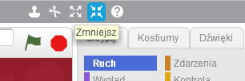
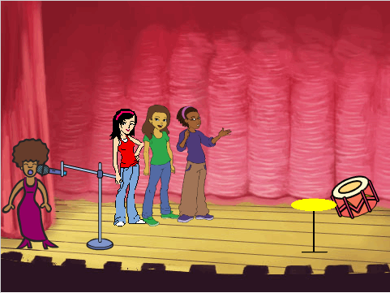
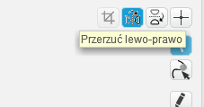
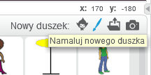
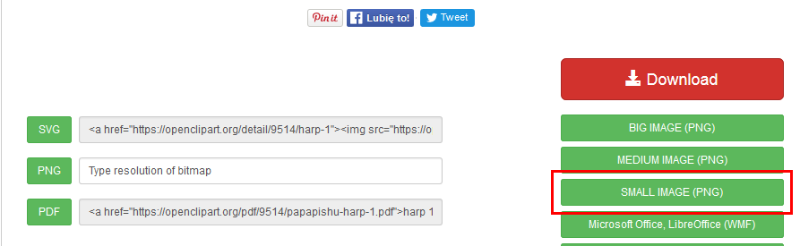
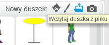
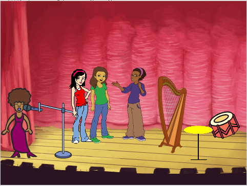
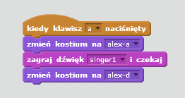
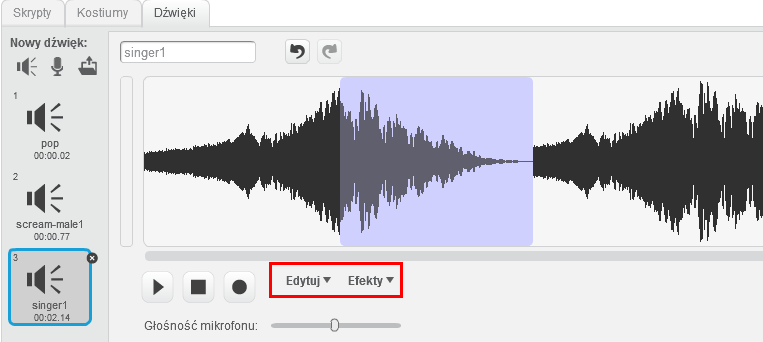

Krok 1: Dodaj chórek
W twojej kapeli jest tylko jedna solistka. Czas to zmienić! Dodaj chórek składający się z trzech piosenkarek.
Dodamy również obsługę skrótów klawiaturowych tak, żebyś mógł obsługiwać piosenkarki za pomocą klawiatury.
Zadania do wykonania
-
Najpierw pomniejsz swoją solistkę, musimy przygotować miejsce na scenie dla pozostałych piosenkarek.
Jeśli nie pamiętasz, jak to zrobić, cofnij się do początku lekcji, kiedy to pomniejszaliśmy bębenek.

-
Dodaj solistki do chórku. W tym celu musisz dodać trzy nowe duszki. Odszukaj trzy duszki pasujące do Twojego chórku i dodaj je na scene, np. tak jak zostało to zrobione poniżej:

-
Twoje solistki patrzą się w prawo, czy wiesz jak to zmienić? Postaraj się obrócić jedną z nich tak, żeby spoglądała w lewą stronę. W tym celu musisz przejść do zakładki "Kostiumy" i uzyć przycisku do obracania kostiumu.

Zapisz swój projekt
Krok 2: Własny instrument!
Zadania do wykonania
-
Jeżeli w Twojej kapeli nie ma żadnego instrumentu namalowanego przez Ciebie, czas to zmienić!
Namaluj własny instrument, korzystając z przycisku "Namaluj duszka":

-
Poza duszkami z biblioteki duszków i rysowanymi ręcznie, możesz jeszcze używać dowolnych plików graficznych jako duszki!
Dodajmy więc nowy instrument, będzie to harfa.
Wejdź na stronę i pobierz obrazek harfy klikając na przycisk "Small image png":

-
Wczytaj nowy instrument. W tym celu użyj przycisku "Wczytaj duszka z pliku":

-
Następnie odszukaj pobrany na dysk plik z harfą i wczytaj go do Kapeli.
-
Teraz Twoja scena powinna wyglądać mniej więcej w ten sposób:

Upewnij się, że przed przejściem do następnego kroku masz na scenie chórek i nowe instrumenty!
Zapisz swój projekt
Krok 3: Graj na klawiaturze!
Zadania do wykonania
-
Mamy już wszystkich wokalistów i instrumenty, czas sprawić, by zaśpiewali, kiedy naciśniemy jakiś klawisz.
Przygotuj dla każdego duszka skrypt, który sprawi, że po wciśnięciu jakiegoś klawisza na klawiaturze duszek zmieni kostium i zagra odpowiedni dźwięk. Pamiętaj, żeby dla każdego duszka przypisać innny klawisz, w ten sposób będziesz mógł grać swoją kapelą za pomocą klawiatury!

-
W zakładce dźwięki możesz również nagrywać własne dźwięki dla duszków, importować dźwięki z Twojego komputera oraz modyfikować istniejące dźwięki.
Spróbuj przez chwilę poeksperymentować z edytorem dźwięków. Wybierz dźwięk z biblioteki lub nagraj własny i powiel go lub jego fragment oraz dodaj do niego różne efekty.
W tym celu skorzystaj z menu "Edytuj" i "Efekty".
Fragmenty dźwięku, które chcesz edytować, możesz zaznaczyć myszką.
